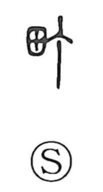

町

Uncategorized
Kun: machi, aze | On: cho, tei
town ・ city block ・ field ridge
Explanation
町 is a phono-semantic character: the field element supplies the setting of agricultural land, while 丁 serves as the phonetic, pointing to the on reading cho. The Shuowen glosses it as the place where one walks through the fields—the raised ridge or levee between rice paddies. In Japanese usage this sense was extended from the divisions of a field to the divisions of inhabited space, becoming the term for an urban block and, further, the municipal unit “town.”